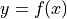
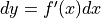
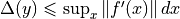
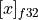
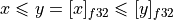

Note
Go to the end to download the full example code
Issues when switching to float#
Most models in scikit-learn do computation with double,
not float. Most models in deep learning use float because
that’s the most common situation with GPU. ONNX was initially
created to facilitate the deployment of deep learning models
and that explains why many converters assume the converted models
should use float. That assumption does not usually harm
the predictions, the conversion to float introduce small
discrepencies compare to double predictions.
That assumption is usually true if the prediction
function is continuous, , then
. We can determine an upper bound
to the discrepencies :
.
dx is the discrepency introduced by a float conversion,
dx = x - numpy.float32(x).
However, that’s not the case for every model. A decision tree trained for a regression is not a continuous function. Therefore, even a small dx may introduce a huge discrepency. Let’s look into an example which always produces discrepencies and some ways to overcome this situation.
More into the issue#
The below example is built to fail.
It contains integer features with different order
of magnitude rounded to integer. A decision tree compares
features to thresholds. In most cases, float and double
comparison gives the same result. We denote
 the conversion (or cast)
numpy.float32(x).

However, the probability that both comparisons give different results is not null. The following graph shows the discord areas.
from skl2onnx.sklapi import CastTransformer
from skl2onnx import to_onnx
from onnxruntime import InferenceSession
from sklearn.model_selection import train_test_split
from sklearn.tree import DecisionTreeRegressor
from sklearn.preprocessing import StandardScaler
from sklearn.pipeline import Pipeline
from sklearn.datasets import make_regression
import numpy
import matplotlib.pyplot as plt
def area_mismatch_rule(N, delta, factor, rule=None):
if rule is None:
def rule(t):
return numpy.float32(t)
xst = []
yst = []
xsf = []
ysf = []
for x in range(-N, N):
for y in range(-N, N):
dx = (1.0 + x * delta) * factor
dy = (1.0 + y * delta) * factor
c1 = 1 if numpy.float64(dx) <= numpy.float64(dy) else 0
c2 = 1 if numpy.float32(dx) <= rule(dy) else 0
key = abs(c1 - c2)
if key == 1:
xsf.append(dx)
ysf.append(dy)
else:
xst.append(dx)
yst.append(dy)
return xst, yst, xsf, ysf
delta = 36e-10
factor = 1
xst, yst, xsf, ysf = area_mismatch_rule(100, delta, factor)
fig, ax = plt.subplots(1, 1, figsize=(5, 5))
ax.plot(xst, yst, ".", label="agree")
ax.plot(xsf, ysf, ".", label="disagree")
ax.set_title("Region where x <= y and (float)x <= (float)y agree")
ax.set_xlabel("x")
ax.set_ylabel("y")
ax.plot([min(xst), max(xst)], [min(yst), max(yst)], "k--")
ax.legend()
<matplotlib.legend.Legend object at 0x7f7383b6e6b0>
The pipeline and the data#
We can now build an example where the learned decision tree does many comparisons in this discord area. This is done by rounding features to integers, a frequent case happening when dealing with categorical features.
X, y = make_regression(10000, 10)
X_train, X_test, y_train, y_test = train_test_split(X, y)
Xi_train, yi_train = X_train.copy(), y_train.copy()
Xi_test, yi_test = X_test.copy(), y_test.copy()
for i in range(X.shape[1]):
Xi_train[:, i] = (Xi_train[:, i] * 2**i).astype(numpy.int64)
Xi_test[:, i] = (Xi_test[:, i] * 2**i).astype(numpy.int64)
max_depth = 10
model = Pipeline(
[("scaler", StandardScaler()), ("dt", DecisionTreeRegressor(max_depth=max_depth))]
)
model.fit(Xi_train, yi_train)
The discrepencies#
Let’s reuse the function implemented in the first example Comparison and look into the conversion.
def diff(p1, p2):
p1 = p1.ravel()
p2 = p2.ravel()
d = numpy.abs(p2 - p1)
return d.max(), (d / numpy.abs(p1)).max()
onx = to_onnx(model, Xi_train[:1].astype(numpy.float32), target_opset=15)
sess = InferenceSession(onx.SerializeToString(), providers=["CPUExecutionProvider"])
X32 = Xi_test.astype(numpy.float32)
skl = model.predict(X32)
ort = sess.run(None, {"X": X32})[0]
print(diff(skl, ort))
(191.14468356708568, 4.322660335343007)
The discrepencies are significant. The ONNX model keeps float at every step.
In scikit-learn:
CastTransformer#
We could try to use double everywhere. Unfortunately, :epkg:`ONNX ML Operators` only allows float coefficients for the operator TreeEnsembleRegressor. We may want to compromise by casting the output of the normalizer into float in the scikit-learn pipeline.
model2 = Pipeline(
[
("scaler", StandardScaler()),
("cast", CastTransformer()),
("dt", DecisionTreeRegressor(max_depth=max_depth)),
]
)
model2.fit(Xi_train, yi_train)
The discrepencies.
onx2 = to_onnx(model2, Xi_train[:1].astype(numpy.float32), target_opset=15)
sess2 = InferenceSession(onx2.SerializeToString(), providers=["CPUExecutionProvider"])
skl2 = model2.predict(X32)
ort2 = sess2.run(None, {"X": X32})[0]
print(diff(skl2, ort2))
(191.14468356708568, 4.322660335343007)
That still fails because the normalizer in scikit-learn and in ONNX use different types. The cast still happens and the dx is still here. To remove it, we need to use double in ONNX normalizer.
model3 = Pipeline(
[
("cast64", CastTransformer(dtype=numpy.float64)),
("scaler", StandardScaler()),
("cast", CastTransformer()),
("dt", DecisionTreeRegressor(max_depth=max_depth)),
]
)
model3.fit(Xi_train, yi_train)
onx3 = to_onnx(
model3,
Xi_train[:1].astype(numpy.float32),
options={StandardScaler: {"div": "div_cast"}},
target_opset=15,
)
sess3 = InferenceSession(onx3.SerializeToString(), providers=["CPUExecutionProvider"])
skl3 = model3.predict(X32)
ort3 = sess3.run(None, {"X": X32})[0]
print(diff(skl3, ort3))
(2.0221857994329184e-05, 5.733250169110544e-08)
It works. That also means that it is difficult to change the computation type when a pipeline includes a discontinuous function. It is better to keep the same types all along before using a decision tree.
Total running time of the script: (0 minutes 0.936 seconds)